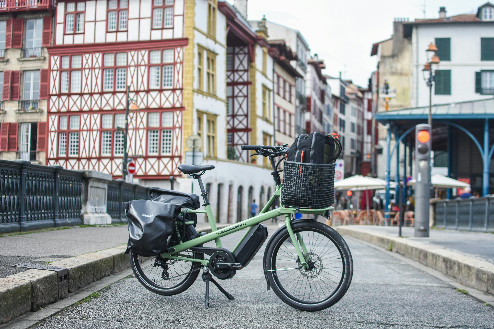
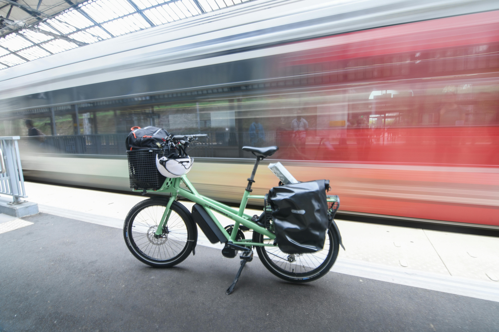

Nos conseils pour bien préparer votre voyage

Préparez soigneusement votre itinéraire, en vous laissant tout de même une marge de liberté suffisante pour découvrir les localités que vous traversez.

Selon la période à laquelle vous voyagez, il peut être utile de réserver vos hébergements. En été, c'est préférable, surtout sur la côte.

Inutile de trop charger vos sacoches: en général, on trouve de quoi manger chaque jour. Cependant, selon les portions des véloroutes, il arrive de parcouvrir plusieurs dizaines de kilomètres sans croiser aucun magasin!

Soyez prêt à parer à toute avarie: il est indispensable d'avoir un minimum de matériel pour par exemple réparer un pneu crevé!